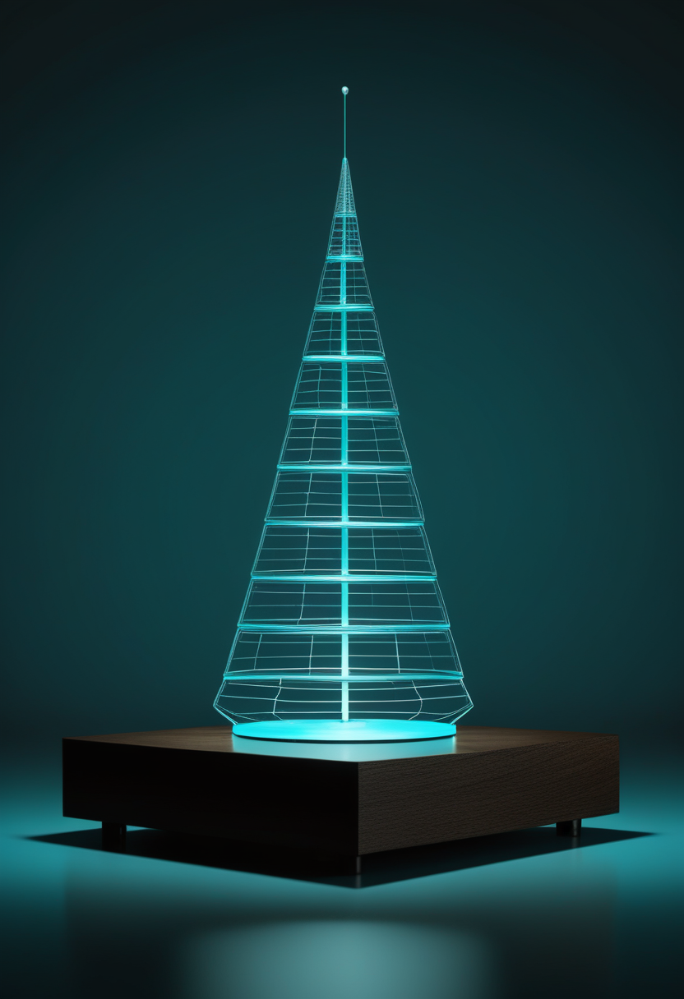

ワシントン州ヤキマ郡で、乳牛から感染した鳥インフルエンザ(H5N1)による死者が出た。2026年では初めて、米国では通算3人目。エボラの死者はアフリカCDC集計で5,376人まで増え、麻疹は来週『排除』認定の見直しを控える。基盤の章が示すのは、動物由来の感染症がいくつもの経路で人に迫り続けている現実だ。
前号(11/3号)はエボラの死者5,000人超えを今日の一本に選んだが、今号は米国内の新しい展開を優先した。ワシントン州ヤキマ郡の住民が11/1(日)に鳥インフルエンザで死亡したと、郡の保健当局が11/2に発表した。感染した乳牛のいる酪農場で曝露しており、持病があった。米CDCがH5N1への感染を確認し、CNN・Fox Newsなど複数の全米メディアが伝えている。米国の鳥インフルエンザによる死者は、2025年1月のルイジアナ州(H5N1)、2025年11月のワシントン州(H5N5という別の型)に続き3人目で、2026年では初めて。同州では10/8に乳牛の感染が初めて確認されたばかりで、ヤキマ郡と隣のベントン郡の酪農場に広がっている。エボラはその後も死者が増え続けており(アフリカCDCの集計で5,376人)、今号の基盤の章ではその続報も届ける。CDCは一般の人への危険は低いとしている。
米ユタ大学とCure SMAの研究者は、Cure SMAが集めた家族の回答データを解析し、Neurology and Therapy誌に発表した(Cure SMAが10/21に告知)。SMN2遺伝子のコピー数が2以下の子どもでは、生後3週未満に治療を始めた場合、生後4か月以降に始めた場合に比べて、より多くの運動発達の節目(座る・立つ・歩くなど)に到達するオッズが約13.4倍だった。新生児スクリーニングや出生前検査が早い治療につながり、家庭の所得による差も小さくしていたという。保護者の回答にもとづく解析で、無作為化試験ではない点に注意。
Scholar Rockは、9/11に米国で承認された筋肉標的薬Isembyld(アピテグロマブ)を含む第3四半期決算を11/10(米国の取引開始前)に発表する。11/3には、経営陣が投資家会議に出ると公表した。Isembyldは、SMN2を標的とする治療(スピンラザ・エブリスディなど)をすでに受けている2歳以上の患者が対象で、添付文書には骨折のリスクが高まるおそれがあるとの警告がある。価格は1バイアル1万1,659ドル、年間の正味価格は約31万ドルとの報道があるが、要確認。欧州では10/8に承認申請を再提出済み(前号既報)。
米国では11月が『全米家族介護者月間』。SMA News Todayでは11/3、SMAと暮らすコラムニストが、自分の生活を支えてきた両親への感謝をつづった。Cure SMAは10/1から年末キャンペーン『This Gen, Next 10』を行い、この世代で治療が大きく進んだことを振り返りつつ、次の10年の研究とケアに向けた支援を呼びかけている。治療が増えても、毎日の生活を支える家族の負担は続いているという視点を思い出させる。
早い治療がもたらす差が、家族の回答データからも裏付けられた。一方で、新薬の価格と決算が示すのは『承認』から『支払う』段階への移行。11月は、その両方を支える家族の存在を思い出す月でもある。
Bloombergは11/3、中国の脳技術企業・強脳科技(BrainCo)が、頭に着ける非侵襲の脳刺激装置で食欲を抑え、やせ薬のGLP-1薬に代わる手段をめざしていると報じた。共同創業者は『電子版のGLP-1』と表現した。発売目標は2〜3年後で、まず中国、その後に米国も視野に入れる。医療用と一般向けの2種類を検討しているという。同社はすでに自閉症・ADHD・不眠向けのヘッドセットや、米FDAが認めた義手を販売している。ただし効果を示す臨床データや規制当局への申請はまだ確認できず、報道はほぼBloombergの1本にもとづく。
マスク氏は10/30に、視覚回復の『Blindsight』は技術的には準備済みで規制当局の承認待ちだと投稿した。しかしXenoSpectrumの確認では、11/2時点でClinicalTrials.govにNeuralink関連の試験は7件あるが、視覚回復の試験は登録されておらず、最初の埋め込みの日程も示されていない。中国では、埋め込み型BCIを開発する上海の阶梯医疗(StairMed)が11/3、上場(IPO)に向けた指導の登録を上海証券監督管理局で済ませたと報じられた(新浪の速報まとめ、一次の公示は未確認)。StairMedは9月時点で30〜40人規模の多施設試験を2026年前半に開始し2028年頃の上市を目標としていると報じられており、臨床試験と資本市場の両方を並行して進めている。
視覚回復をめざすBCIを開発する杭州のNanochapは11/3、シリーズC+で5億元(人民元)を調達したと発表した。Gaorong Venturesが主導し、今年2回目の調達で累計調達額は10億元に達した。320チャネルの網膜インターフェースは臨床試験の段階にあり、すでに3人が埋め込み手術を受けている。1,280チャネルの視覚野インターフェースは開発中で、臨床検証はまだ計画段階。中国では強脳科技(BrainCo)や神経訊息(Neuracle Medical)も上場準備を進めており、視覚回復BCIの資金と上場をめぐる動きが同時に進んでいる。
視覚回復をめざす中国企業は、臨床試験・資金調達・上場準備を同時並行で進めている。Neuralinkは『発表』が先行し、試験登録という裏付けはまだ追いついていない。BCIの応用先は、まひ・発話・視覚に加えて肥満にも広がりつつあるが、効果の裏付けはどの技術もまだ薄い。
ワシントン州ヤキマ郡の住民が11/1(日)に鳥インフルエンザで死亡したと、郡の保健当局が11/2に発表した。感染した乳牛のいる酪農場で曝露しており、持病があった。米CDCがH5N1への感染を確認したとCNN・Fox News・ContagionLiveなど複数の全米メディアが伝えている(10/23号で伝えた同郡の酪農従事者感染情報は、2024年の記事の誤配信だったと判明し10/31号で取り下げたが、今回は別の死亡事例で複数メディアが直接確認済み)。米国の鳥インフルエンザによる死者は、2025年1月のルイジアナ州(H5N1)、2025年11月のワシントン州(H5N5という別の型)に続き3人目で、2026年では初めて。同州では10/8に乳牛の感染が初めて確認されたばかりで、ヤキマ郡と隣のベントン郡の酪農場に広がっている。感染した牛群の数は報道により9〜39と大きく異なり、人の感染例の数も郡の発表(3例)と州のまとめ(酪農関連1例)で食い違っている。CDCは一般の人へのリスクは低いとしつつ、低温殺菌した乳製品は安全だが感染した牛の生乳にはウイルスが残りうるとして注意を呼びかけている。
アフリカCDCが11/2(月)に共有したデータで、ブンディブギョ型エボラの死者は5,376人となった。内訳はコンゴ民主共和国(DRC)5,372人、ケニア2人、ウガンダ2人で、確定例は10,444例、致死率は5割を超える。米CDCの集計(10/31時点)では死者5,107人で、アフリカCDCの数に『疑い例』の死者が含まれるかは明らかにされていない。前号(11/3号)で伝えたDRC保健省の発表(死亡5,026人)からも増えた。アフリカCDCのカセヤ所長は、流行地域の広がりは『前例がない』とし、国際支援が足りないと訴えている。承認済みのワクチン・治療薬はまだない。
米国の麻疹はCDC集計(10/29時点)で4,852例(前々号既報、新しい集計は未取得)。汎米保健機構(PAHO)の地域検証委員会が、米国とメキシコの『麻疹排除』の地位を年次会合で見直す。会合は11/10〜13と報じられている(日程はPAHOの公式発表で要確認)。判断の対象は、米国で流行が始まった2025年1月20日から1年間に国内で感染が途切れずに続いたかどうか。PAHOは2025年11月にカナダの排除の地位を取り消している。フロリダ州では国内で感染したデング熱が1週間で60例増え、485例になった(CIDRAPの11/2記事を引用したKFFのまとめ)。
鳥インフルは『牛から人』への感染死が2026年に入って初めて出たことで、酪農従事者の防護と検査体制が改めて問われる。ただし人から人への感染は報告されていない。エボラは数字が増え続け、集計元による差も大きい。来週は米国の麻疹排除の判断とデング熱の広がりに注目。
中国科学院雲南天文台の張西亮氏らは、2024年12月4日に大気圏に突入した小惑星『2024 XA1』の自転周期が1.63秒で、これまでの記録(2.58秒)を破り、近地球小惑星で最も速いと確認した。論文はAstronomical Journal誌に掲載(報道は10/25〜27)。直径は約0.55メートルで、発見から落下までわずか約10時間。麗江の2.4メートル望遠鏡で落下直前の1時間に撮影した。これほど速く回ると、ばらばらの岩の寄せ集めなら飛び散ってしまうため、一枚岩のような固い天体だとわかる。地球に落ちる小天体の監視と予測にも役立つ。
南デンマーク大学などの研究チームは、ブラックホールが2つに分裂できる条件を理論的に調べ、Physical Review D誌に10/22に発表した。回転していないブラックホールは、割れると全体のエントロピー(乱雑さ)が減るため分裂できない。しかし、回転が理論上の最大値に近い場合に限り、分裂がありうるという。その場合、ブラックホールの境界(地平面)は時間とともにズボンのような形を描く。実際に起こる確率はまだ出せず、アインシュタインの理論を超えた重力の性質しだいとしている。ガンマ線望遠鏡(Fermi-LAT)で小さな破片の信号を探せる可能性がある。分裂が観測されたわけではない。
カナダ・マギル大学トロティエ宇宙研究所などのチームは、天の川銀河の中心にある超大質量ブラックホール『いて座A*』の周りを回るガス(ミニスパイラル)をJWSTで観測し、重元素(金属)に富んでいることを確認したと10/19に発表した。論文『Ionization Structure and Metal Enrichment of the Galactic Center Minispiral Observed with JWST』はAstronomical Journal誌に掲載。ガスの組成は近くの恒星と似ており、超新星爆発でつくられた金属が混ざった可能性が高いという。重元素が多いガスは冷えやすく、ブラックホールに落ち込みやすくなるはずだが、いて座A*が実際にはわずかな量しか取り込んでいない理由はまだ説明できていない。別の研究チームは同じガスに過去の爆発的な活動の痕跡も探している。
中国科学院の観測が、地球に落ちる直前の小天体の正体まで明らかにした。ブラックホールの理論的な分裂可能性と、天の川中心の重元素に富むガスは、理論と観測の両面から『当たり前ではない』ことを示す。ESAのEuclidは11月中旬に最初のデータ公開(DR1)を予定している。
China Dailyの11/2の報道によると、上海交通大学医学院附属瑞金医院が国内外の機関と『医療・健康のデジタルツイン国際コンソーシアム』を立ち上げた。最終的に5,000万人分の健康デジタルツイン(体の情報をもとにコンピューター上に作る分身)をつくる構想だという。寧光院長は、遺伝・生理・心理・行動・社会・環境などの多くのデータをまとめ、一人ひとりの『デジタルな生命の座標』をつくると説明した。参加機関や資金、個人データの扱いの詳細は報道からは確認できず、報道ベースの情報である。

研究者のDavy Deng氏とClaire Wang氏は11/2の論考で、全脳エミュレーション(脳をまるごとコンピューター上に再現する試み)の成果を比べるための共通の基準が必要だと提案した。『表現』『予測』『介入への反応』『計算の仕組み』の4段階で評価する案で、意識に関わるとされる脳の特徴とも結びつけている。背景には、2026年3月にEon Systemsが『ハエの脳を丸ごと再現して仮想の体を動かした』と発表し、批判が出たことがある。批判側は、動きの多くは既存の制御モデルに頼っていて、脳の配線図が働いた証拠にはならないと指摘した。論考は査読を経ていない。
米デューク大学の『Duke Digital Twin Initiative』は、工学・医学・看護・データ科学の専門家が組み、患者一人ひとりのデータで更新され続ける計算モデルを作ろうとしている。11/2に公開されたインタビューでは、個別化した治療と病気の早期発見をねらいとしている。前号のスタンフォード大の『脳の予測モデル』と並び、米国の大学で人間のデジタルツインを医療に使う動きが続いている。具体的な臨床成果はまだ示されていない。
中国は『数千万人規模の分身』という量で、米国の大学は個人に合わせた精度で、デジタルツインを医療に取り込もうとしている。一方で『脳を写した』という主張には、ようやく比べるための物差しが提案され始めた。
今日は、動物から人への感染症が複数の経路で迫り続けていることを示す一日だった。米国では乳牛から感染した鳥インフルエンザが2026年で初めての死者を出し、コンゴ民主共和国のエボラは死者が5,376人に達した。自由の章では、脳を刺激する技術が『まひの回復』から『食欲の抑制』へと応用先を広げ、視覚回復をめざす中国企業が資金と上場の両方を競っている。畏敬の章では、地球に落ちる直前の小天体の正体が明らかになり、天の川の中心では重元素に富むガスがブラックホールの謎を少しだけ解きかけた。美の章では、5,000万人規模の健康デジタルツインという構想と、『脳を写した』と言えるための評価基準づくりが、同じ週に報じられている。
数字と構想がどれだけ大きくなっても、確かめる手は一つずつの事実を積み重ねていくしかない。では、また明日の朝に。 — JaH